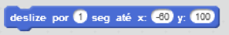

Coma alguma coisa
Decida o que seu animal de estimação vai fazer quando receber a mensagem "comida".
Acesse a categoria Eventos e arraste um bloco quando eu receber.
Para fazer seu animal de estimação deslizar na direção da comida, clique na categoria Movimento. Use o bloco deslize para dizer ao seu animal de estimação para onde você quer que ele vá.

Adicione outro bloco deslize ao final do script para fazer seu animal voltar para sua posição original.

Em seguida, dê algo para seu animal de estimação brincar